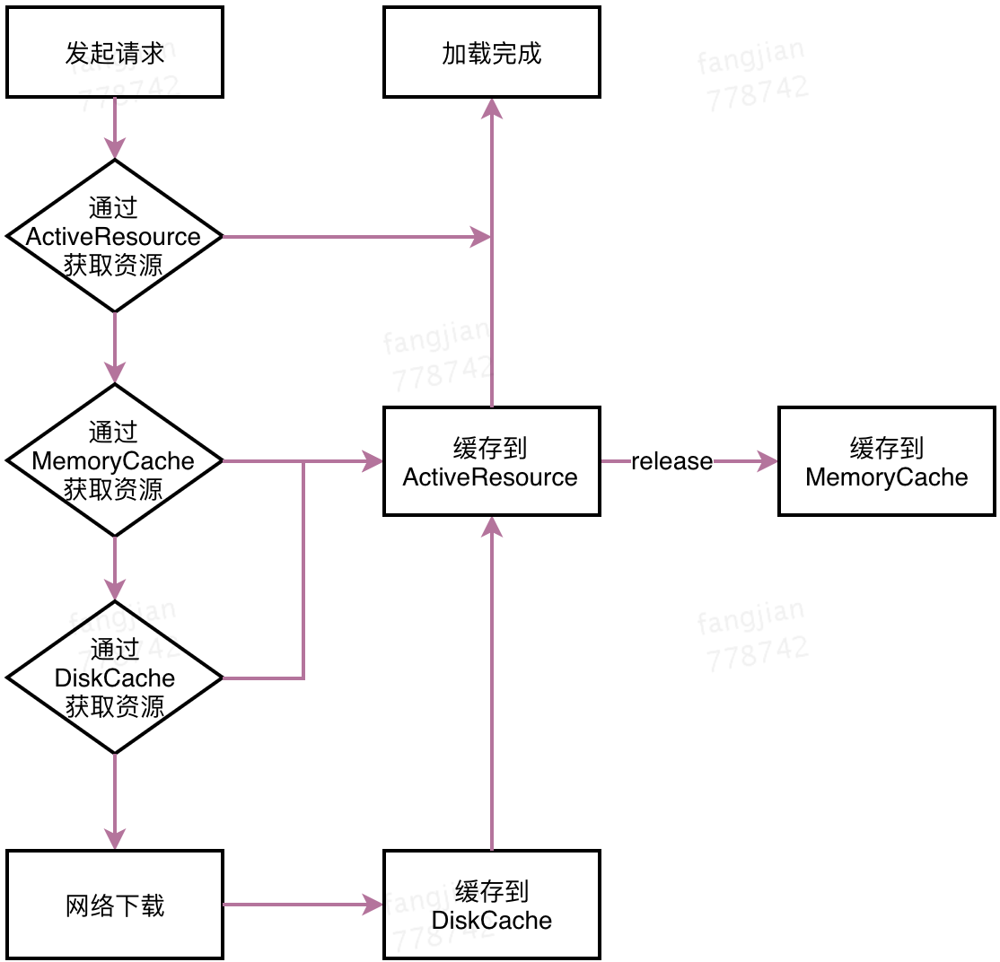

Glide资源请求流程

Glide中有几个缓存相关的类
//根据当前机器参数计算需要设置的缓存大小
MemorySizeCalculator calculator = new MemorySizeCalculator(context);
//创建 Bitmap 池
if (bitmapPool == null) {
if (Build.VERSION.SDK_INT >= Build.VERSION_CODES.HONEYCOMB) {
int size = calculator.getBitmapPoolSize();
bitmapPool = new LruBitmapPool(size);
} else {
bitmapPool = new BitmapPoolAdapter();
}
}
//创建内存缓存（Lru算法）
if (memoryCache == null) {
memoryCache = new LruResourceCache(calculator.getMemoryCacheSize());
}
//创建磁盘缓存(Lru算法)
if (diskCacheFactory == null) {
//默认250M磁盘容量
diskCacheFactory = new InternalCacheDiskCacheFactory(context);
}
除此之外 Engine 中还有一个 ActiveResources 作为第一级缓存
在旧版本的Glide中，你可能发现 ActiveResources 并不是第一级缓存，而是第二级。
ActiveResources 与 MemoryCache
ActiveResources 是第一级缓存，表示当前活动中的资源。
private final Map<Key, WeakReference<EngineResource<?>>> activeResources;
ActiveResources 中通过一个 HashMap 来存储，数据保存在一个弱引用（WeakReference）中。
通过ResourceWeakReference将资源，资源key和ReferenceQueue包装起来，作为value存入activeResources。
activeResources.put(key, new ResourceWeakReference(key, cached, getReferenceQueue()));
ResourceWeakReference是一个WeakReference，没什么特别的。关键是我们传入了一个ReferenceQueue参数。
private static class ResourceWeakReference extends WeakReference<EngineResource<?>> {
private final Key key;
public ResourceWeakReference(Key key, EngineResource<?> r, ReferenceQueue<? super EngineResource<?>> q) {
super(r, q);
this.key = key;
}
}
getReferenceQueue方法将新建一个ReferenceQueue返回，我们知道对象被GC时会先放入ReferenceQueue中，通过ReferenceQueue可以跟踪那些被GC的弱引用（或者软引用、虚引用）。
private ReferenceQueue<EngineResource<?>> getReferenceQueue() {
if (resourceReferenceQueue == null) {
resourceReferenceQueue = new ReferenceQueue<EngineResource<?>>();
MessageQueue queue = Looper.myQueue();
queue.addIdleHandler(new RefQueueIdleHandler(activeResources, resourceReferenceQueue));
}
return resourceReferenceQueue;
}
同时在当前线程Looper添加IdleHandler回调，IdleHandler回调是指Looper空闲(队列中没有处理任务)的时候调用。
private static class RefQueueIdleHandler implements MessageQueue.IdleHandler {
private final Map<Key, WeakReference<EngineResource<?>>> activeResources;
private final ReferenceQueue<EngineResource<?>> queue;
public RefQueueIdleHandler(Map<Key, WeakReference<EngineResource<?>>> activeResources,
ReferenceQueue<EngineResource<?>> queue) {
this.activeResources = activeResources;
this.queue = queue;
}
@Override
public boolean queueIdle() {
//闲的时候检查ReferenceQueue中有没有被回收的资源对象
ResourceWeakReference ref = (ResourceWeakReference) queue.poll();
if (ref != null) {
//有的话就从activeResources移除
activeResources.remove(ref.key);
}
//返回true，表示下次继续回调
return true;
}
}
可见，通过在线程空闲的时候不断检查ReferenceQueue，如果有被GC的资源对象(也就是ResourceWeakReference)，就从activeResources中移除该资源。
我们已经知道Glide查找资源的顺序，先loadFromActiveResources，再loadFromCache，看下源码：
public class Engine implements EngineJobListener,
MemoryCache.ResourceRemovedListener,
EngineResource.ResourceListener {
private final MemoryCache cache;
private final Map<Key, WeakReference<EngineResource<?>>> activeResources;
...
private EngineResource<?> loadFromCache(Key key, boolean isMemoryCacheable) {
if (!isMemoryCacheable) {
return null;
}
EngineResource<?> cached = getEngineResourceFromCache(key);
if (cached != null) {
cached.acquire();
//注意，从memory取到的资源要存入activeResources
activeResources.put(key, new ResourceWeakReference(key, cached, getReferenceQueue()));
}
return cached;
}
private EngineResource<?> getEngineResourceFromCache(Key key) {
//注意是remove(key)，不是get(key)
Resource<?> cached = cache.remove(key);
final EngineResource result;
if (cached == null) {
result = null;
} else if (cached instanceof EngineResource) {
result = (EngineResource) cached;
} else {
result = new EngineResource(cached, true /*isCacheable*/);
}
return result;
}
private EngineResource<?> loadFromActiveResources(Key key, boolean isMemoryCacheable) {
if (!isMemoryCacheable) {
return null;
}
EngineResource<?> active = null;
WeakReference<EngineResource<?>> activeRef = activeResources.get(key);
if (activeRef != null) {
active = activeRef.get();
if (active != null) {
active.acquire();
} else {
//资源被回收了，要移除
activeResources.remove(key);
}
}
return active;
}
...
}
可以看到，当我们从MemoryCache中获取到缓存图片之后会将它从缓存中移除，并将缓存图片存储到activeResources当中。 另外注意到，每次获取到缓存资源后，都会调用acquire方法。 看下acquire源码：
class EngineResource<Z> implements Resource<Z> {
...
private int acquired;
private boolean isRecycled;
void acquire() {
++acquired;
}
void release() {
if (--acquired == 0) {
listener.onResourceReleased(key, this);
}
}
}
EngineResource中维护了一个计数器，类似引用计数，当资源需要release时，检查计数器是否为0，如果为0，表示该资源没有引用了，资源可以回收。 onResourceReleased回调到Engine中
@Override
public void onResourceReleased(Key cacheKey, EngineResource resource) {
activeResources.remove(cacheKey);
if (resource.isCacheable()) {
cache.put(cacheKey, resource);
} else {
resourceRecycler.recycle(resource);
}
}
首先从activeResources移除，因为其不再是active资源了，然后检查resource是否可以被缓存，如果可以，就重新回到MemoryCache中，否则将recycle掉。

为什么要搞一个activeResource呢？
使用activeResources来缓存正在使用中的图片，用来保护正在使用中的图片不会被LruCache算法回收掉。
BitmapPool
BitmapPool是用来复用Bitmap从而避免重复创建Bitmap而带来的内存浪费，BitmapPool的实现类是LruBitmapPool。 BitmapPool是根据Bitmap尺寸和Bitmap.Config来查找可复用的Bitmap对象，复用过程主要发生在图片的transform阶段，因为这个阶段对Bitmap的操作比较多，创建、回收都比较频繁，因此使用BitmapPool重用Bitmap，可减少内存抖动。
public interface BitmapPool {
boolean put(Bitmap bitmap);
Bitmap get(int width, int height, Bitmap.Config config);
...
}